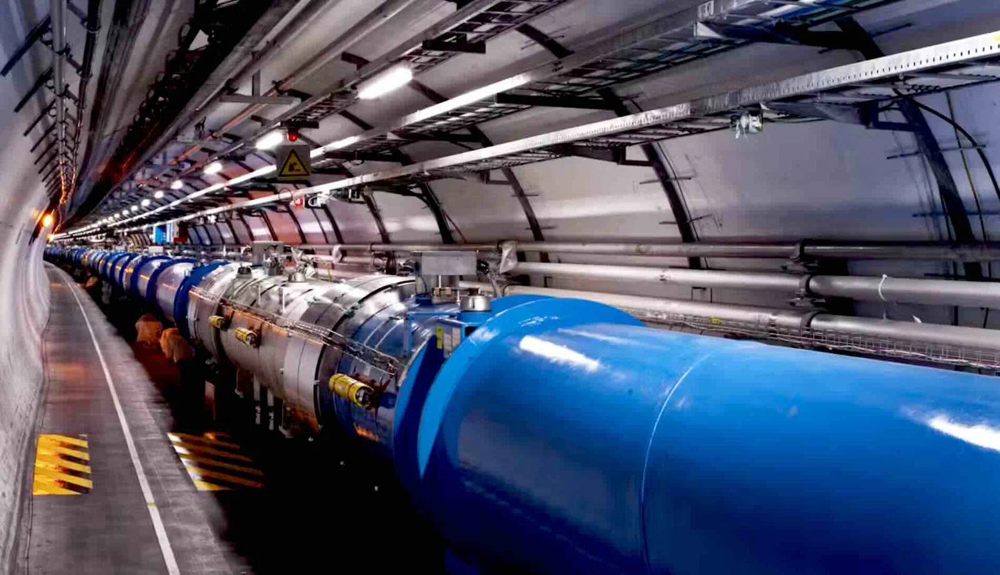
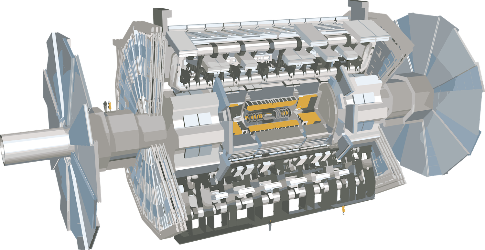
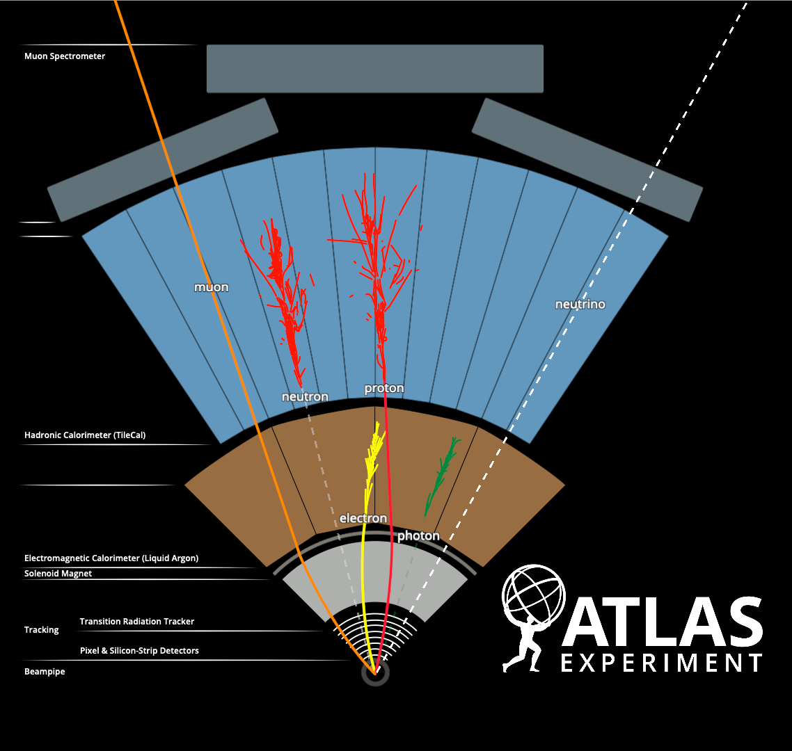
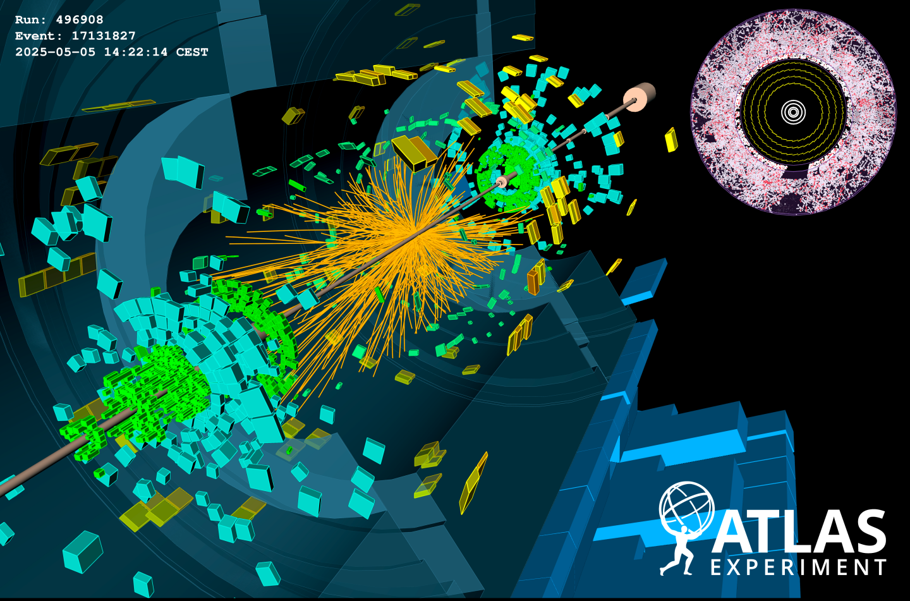
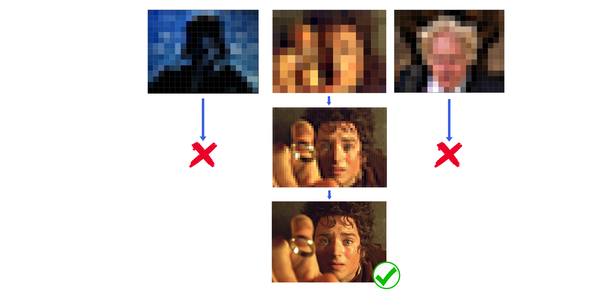
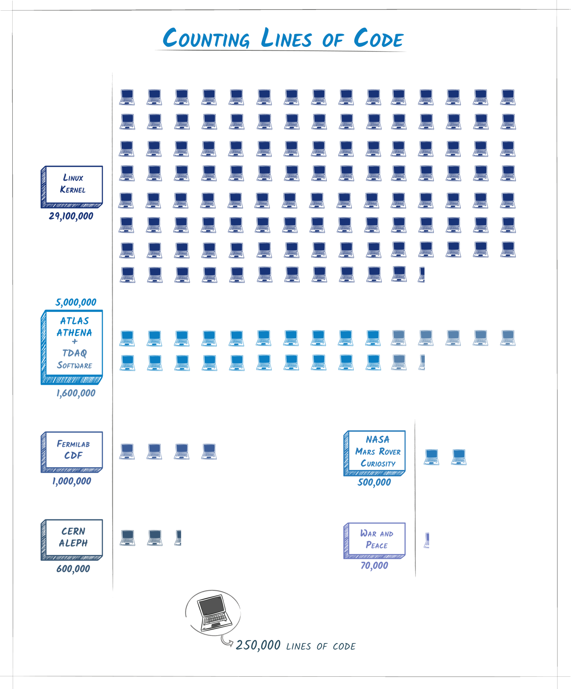
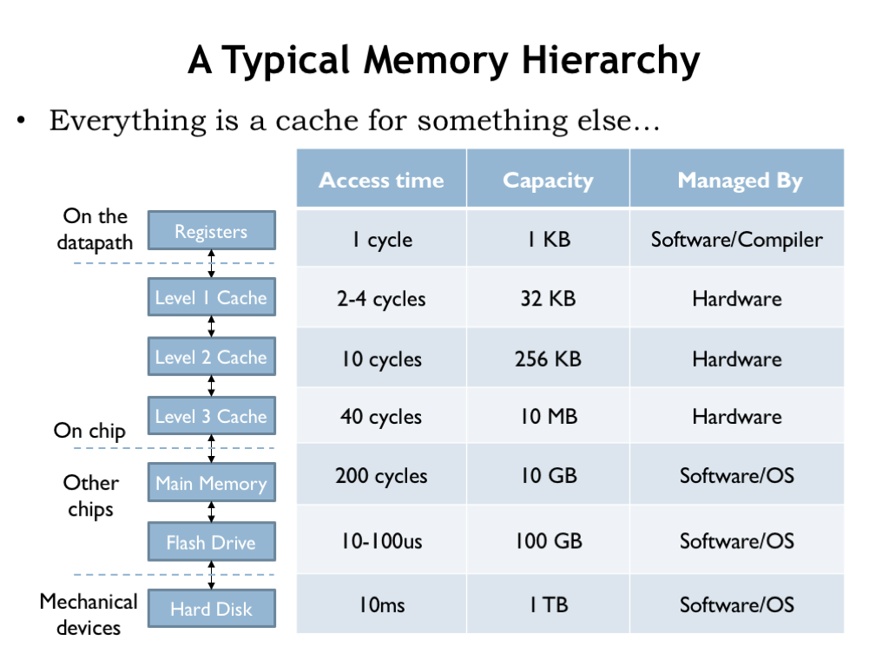

Computational Science × High Energy Physics
LECTURE 01 · RTA at the LHC
19 · 04 · 2026
Marco Montella · Ohio State University · Guest Lecture at University of Manchester, 2026
01 / 18
§ 00 · About Me
CV
Pleased to meet you!
Marco MontellaPhysicist working at the intersection of high-energy physics, data acquisition and real-time computing.
PostDoctoral Researcher
Ohio State University
ATLAS Experiment · CERN
Research Focus: Real-time analysis · Physics Beyond the Standard Model · Dark Matter · Data Acquisition
Education: High Energy Physics PhD, UCL (London), 2020
About Me: Dedicated photographer, mediocre speedcuber, awful runner
A rare good photo!
Marco Montella · Ohio State University · Guest Lecture at University of Manchester, 2026
02 / 18
§ Agenda
L01 · OUTLINE
What we'll cover today
The microscopic world - in the blink of an eye
§ 01
ATLAS: The Forge of Physics
Why Real-Time Analysis is essential
10'
§ 02
System architecture
Trigger · Reco · Selection
12'
§ 03
Inside the hot loop
Modern C++, cache, SoA
15'
§ 04
Track-finding kernel
Pseudocode → SIMD
12'
§ 05
Offline vs. real-time
Budget, latency, losses
8'
§ 06
Takeaways & Q&A
And a small homework
—
Marco Montella · Ohio State University · Guest Lecture at University of Manchester, 2026
03 / 18
§ 01 · Our setting
DIVIDER
PART ONE — 5 MINUTES
ATLAS
the forge of physics
What does the largest experiment in physics do, and why exceptional real-time computing is needed!
Marco Montella · Ohio State University · Guest Lecture at University of Manchester, 2026
04 / 18
§ 01 · Our Setting
CV
ATLAS

Largest of the four main experiments at the Large Hadron Collider (CERN)
Mission: Researching the fundamental bluilding blocks of reality
Areas of research: Measurements of properties of elementary particles · Searches for undiscovered physics phenomena
HOW? Collect, reconstruct & analyze the products of proton collisions delivered by the LHC
The Detector 46m x 25m, capable of measuring position, momentum and properties of any particle produced in proton collisions
The Large Hadron Collider
The ATLAS Detector


Marco Montella · Ohio State University · Guest Lecture at University of Manchester, 2026
05 / 18
§ 01 · Our Setting
CONTEXT
Collision Products: About 1000 particles per collision
Which particles? Muons, Electrons, Photons, Neutrinos (invisible), Tau leptons, "Jets" of collimated hadrons & more
Goal: Measure direction and momentum of all particles
How? Different particles require different strategies.
Examples:
Charged Particles: Detection by tracking direction of flight
Jets of hadrons: Energy sampling in dedicated "Calorimeter" system
Muons: Tracking in both innermost and outermost layers of ATLAS
Physics objects in a slice of the ATLAS detector

Marco Montella · Ohio State University · Guest Lecture at University of Manchester, 2026
06 / 18
§ 01 · Our Setting
CONTEXT
A realistic ATLAS Event

ONE EVENT: ~1000 particles → 60.000 tracker hits + countless calorimeter energy deposits
40 MILLION TIMES PER SECOND
Marco Montella · Ohio State University · Guest Lecture at University of Manchester, 2026
07 / 18
§ 01 · Our Setting
CONTEXT
A Big Data Problem!
- Any one event could contain key insight on Physics beyond the Standard Model
Can we save every event?
NO — Event Size ~ 2 MB. Full data retention is beyond current resources:
$$\begin{aligned}
\text{Data Volume} &= \text{Event Rate} \times \text{Event Size} \\
&= 40 \cdot 10^6\,\text{evt/s} \times 2\,\text{MB/evt} \simeq 8\,\text{TB/s}
\end{aligned}$$
Solution: A "TRIGGER" System
I.E.: Perform Real Time event reconstruction to decide
which events to SAVE and which to DISCARD
which events to SAVE and which to DISCARD
Task: Reconstruct low-level inputs (hits, energy deposits) into physics objects (electrons, jets, muons...)
ATLAS uses a two-stage Trigger system
LEVEL-1 · L1
Hardware Based
Initial, coarse reconstruction. Preserves 1 event every ~400.
$$\underbrace{40\,\text{MHz}}_{\text{collisions}} \;\longrightarrow\;
\underbrace{100\,\text{kHz}}_{\text{L1 pass}}$$
High-Level Trigger · HLT
C++ based computing farm
More accurate reconstruction, decides which events are permanently saved.
$$\underbrace{100\,\text{kHz}}_{\text{HLT process}} \;\longrightarrow\;
\underbrace{2\,\text{kHz}}_{\text{Store}}$$

Marco Montella · Ohio State University · Guest Lecture at University of Manchester, 2026
08 / 18
§ 01 · The problem
01 · SCALE
The ATLAS Big Data Problem
Framing the computational challange:
- A new event every 25 ns. Every event needs to be understood in some form to make a save/discard decision
- o(10^5) features to process and reconstruct into o(1000) physics objects. More data per second than most data centers store in a year.
- The computing farm needs to process ~200 GB/s. More data per second than most data centers store in a year.
- Budget for a decision: 200 ms. Online processing farm ⇒ 40.000 cores
- Errors are lossy and permanent. Every rejected event is gone forever.
Extraordinary Real-Time Reconstruction Task ⇒ large C++ codebase
Tight latency budget ⇒ coding engineered for and efficiency
Marco Montella · Ohio State University · Guest Lecture at University of Manchester, 2026
09 / 18
§ 01 · Our Setting
CONTEXT
The ATHENA Codebase
- More than 5 million lines of code.
- All-encompassing software codebase for ATLAS (including Trigger)
- Written in C++ with python job configuration.
- Optimized for Multi-Threaded computation.
Core principle ⇒ Computational efficiency

Marco Montella · Ohio State University · Guest Lecture at University of Manchester, 2026
10 / 18
§ 02 · Pills
DIVIDER
PART TWO — 12 MINUTES
Pills of computational
efficiency.
Every line matters.
The key is choosing where to spend time.
Marco Montella · Ohio State University · Guest Lecture at University of Manchester, 2026
11 / 18
§ 02 · Pills
02 · PIPELINE
The most important principle
MEMORY
making or breaking efficiency
- Executig any process requries memory access.
- Not all memory costs the same:
- Register memory is already on hardware components (free!)
- Cached memory lives on the processing chip (cheap!)
- RAM memory is separate from CPU chip ⇒ costly to access frequently!
- While the process waits for memory, dependent operatins stall
⇒ bottleneck - Cache vs RAM access is determined by
⇒ usage patterns

It's easy to mitigate memory-access bottlenecks!
Let's go through some quick & simple memory management tips!
Marco Montella · Ohio State University · Guest Lecture at University of Manchester, 2026
12 / 18
§ 03 · Hot loop
03 · C++20
Three rules: preallocate · SoA · branch-free
The inner loop that runs 105 times per second.
src/trigger/select_tracks.cpp
C++20 · -O3 -march=native · Hot path
1// Structure-of-Arrays — one cache line per 8 tracks
2struct TrackSoA { std::span<const float> pt, eta, phi, chi2; };
3
4void select(const TrackSoA& t, DecisionBuffer& out) noexcept {
5 const auto n = t.pt.size();
6 out.reset(); // reuse preallocated storage
7
8 // Vectorizes cleanly: no data-dependent branches inside.
9 for (std::size_t i = 0; i < n; ++i) {
10 const float score = t.pt[i] * (1.0f - t.chi2[i] * 0.1f);
11 const bool keep = (score > kThresh) & (abs(t.eta[i]) < 2.5f);
12 out.mask[i] = keep; // write, don't branch
13 }
14
15 // Compact in a second, predictable pass.
16 out.compact(t, Policy::KeepOrdering);
17}
① Preallocate
No malloc in the loop. Ever. Buffers live for the lifetime of the process.
② SoA layout
One field per stream of bytes. The compiler auto-vectorizes across 8–16 tracks.
③ Branch-free
Compute a mask, write a mask, compact later. Predictable = fast.
Marco Montella · Ohio State University · Guest Lecture at University of Manchester, 2026
13 / 18
§ 03 · Algorithms
DIVIDER
PART THREE — 12 MINUTES
Hits become tracks.
Tracks become decisions.
The pattern-recognition core — where physics,
combinatorics, and cache geometry meet.
Marco Montella · Ohio State University · Guest Lecture at University of Manchester, 2026
14 / 18
§ 03 · Algorithms
04 · TRACK-FINDING
Cellular-automaton track seeding
From detector hits $\{h_i\}$ to candidate tracks $\{T_k\}$.
Pseudocode · kernel
1input H = {h₁, …, hₙ} # hits, grouped by layer
2output T # accepted tracks
3
4for each layer pair (ℓ, ℓ+1):
5build doublets D ← {(a,b) | a∈ℓ, b∈ℓ+1,
6 |Δφ| < δ_φ ∧ |Δη| < δ_η}
7
8for each triplet of adjacent layers:
9link compatible doublets → seeds S
10state[s] ← 1 for each s ∈ S
11
12repeat until fixed point: # automaton
13for each s: state[s] ← max neighbor + 1
14
15for each maximal chain s* of length ≥ L:
16T ← T ∪ fit(s*) # Kalman, one pass
17
18return {t ∈ T | χ²(t)/ndf < τ}
Complexity & cost model
$$C(n) \;=\; \underbrace{\alpha\, n}_{\text{seed}} \;+\; \underbrace{\beta\, n \log n}_{\text{link}} \;+\; \underbrace{\gamma\, k\, L}_{\text{fit}}$$
With $k$ candidate chains of length $L$. In practice the constant $\alpha$ dominates: 90% of wall time lives in doublet building.
Typical inputs
n ≈ 104 hits
L = 8 layers
k ≈ 200 chains
Target · p99
≤ 1.8 μs / event
Marco Montella · Ohio State University · Guest Lecture at University of Manchester, 2026
15 / 18
§ 04 · Compared
05 · A/B
Same physics goal · very different constraints
Offline vs. real-time.
| Dimension | Offline analysis | Real-time analysis |
|---|---|---|
| Latency budget | minutes — hours (per job) | ≤ 4 μs (per event) |
| Input completeness | Full event, any order, re-playable | Partial state, streaming, once |
| Memory model | GC'd, dynamic, large working sets | Preallocated, bounded, RAII-owned |
| Error recovery | Retry, reprocess, diff | No retry — an error is a lost event |
| Primary language | Python, with C++ kernels | C++20, occasionally FPGA / GPU |
| Observability | Log, plot, iterate | Histograms in-loop; lock-free counters |
| Optimizes for | Precision, flexibility | Throughput, tail latency, determinism |
Marco Montella · Ohio State University · Guest Lecture at University of Manchester, 2026
16 / 18
§ 05 · Recap
06 · TAKEAWAYS
Three mental models to carry forward
What to take home.
IDEA · 01
Every microsecond is a budget line.
Design backwards from the latency budget. If a feature doesn't fit, it doesn't ship — it moves offline.
IDEA · 02
Predictability beats cleverness.
Branch-free, allocation-free, data-independent code wins against asymptotically-better alternatives at this scale.
IDEA · 03
Physics constraints are architecture.
The detector geometry determines the memory layout. Stop fighting it — let it shape the types.
Homework · due next week
Clone rta-lhc-lectures and make bench/select.cpp run 2× faster on your laptop.
Marco Montella · Ohio State University · Guest Lecture at University of Manchester, 2026
17 / 18
§ Q&A
12 · END
Over to you
Questions?
If you'd rather ask one later — I'll stay for as long as there's coffee, and the links below work from anywhere.
Email
montella.4@osu.edu
Office hours
Thu 15:00–17:00 · PRB 4048
Marco Montella · Ohio State University · Guest Lecture at University of Manchester, 2026
18 / 18